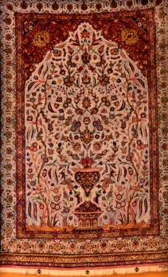

6. फ़ारसी कालीन

अभिलेख संख्या: XXVI-8
मुसल्ला धातु-धागे वाला कालीन, जिसमें मखमली सतह पर फूलदान और वृक्ष रूपी फूलों की डिज़ाइन बनी हुई है। यह डिज़ाइन मेहराबदार पैनल में है और इसके चारों ओर सात किनारों (बॉर्डर) में बेल-बूटा की आकृतियाँ बनी हुई हैं। इसके रंग लाल, नीले, हरे, पीले और सफेद हैं तथा इसे काशान करघे पर बुना गया है। कुछ कालीनों में एक प्रमुख केंद्रीय मीडालियन (मध्य चिन्ह) भी होता है। इन कालीनों में रंगों की समृद्धता पाई जाती है, जिनमें विभिन्न रंगों की अनेक छायाएँ और स्वर होते हैं — सबसे विशिष्ट रंग नीला, लाल, भूरा और हरा हैं। इनकी गाँठों की घनत्व भी अधिक होती है। कालीन के मुख्य भाग (फील्ड) के चारों ओर कई किनारे बने होते हैं जिनमें लहरदार बेलों पर लटके हुए फूलों की आकृतियाँ होती हैं, जो मुख्य पैटर्न के साथ रंग और डिज़ाइन में सामंजस्य रखती हैं। यह कालीन फारस (पर्शिया) का है और 19वीं शताब्दी का माना जाता है।
6. Persian Carpet
Acc No: XXVI-8
A musalla metal-thread carpet with a vase and tree-form floral design on a velvet pile. The design sits within an arched panel and is surrounded by seven borders bearing vine-and-flower motifs. Its colours are red, blue, green, yellow and white, and it was woven on a Kashan loom. Some carpets also carry a prominent central medallion. These carpets display a richness of colour, with many shades and tones of different hues — the most characteristic being blue, red, brown and green. Their knot density is also high. Several borders surround the field of the carpet, carrying flowers suspended from undulating vines that harmonise in colour and design with the main pattern. This carpet is from Persia and is believed to date from the 19th century AD.
6. పర్షియన్ కార్పెట్
Acc No: XXVI-8
ముసల్లా లోహ-దారపు తివాచీ, ఇందులో వెల్వెట్ ఉపరితలంపై పూలకుండీ మరియు వృక్ష రూప పూల డిజైన్ రూపొందించబడింది. ఈ డిజైన్ వంపు ప్యానెల్లో ఉంది మరియు దీని చుట్టూ ఏడు అంచులలో (బార్డర్లు) తీగ-పూల ఆకృతులు ఉన్నాయి. దీని రంగులు ఎరుపు, నీలం, ఆకుపచ్చ, పసుపు మరియు తెలుపు, మరియు ఇది కాషాన్ మగ్గంపై నేయబడింది. కొన్ని తివాచీలలో ఒక ప్రధాన కేంద్ర మెడాలియన్ (మధ్య చిహ్నం) కూడా ఉంటుంది. ఈ తివాచీలలో రంగుల సమృద్ధి కనిపిస్తుంది, వీటిలో వివిధ రంగుల అనేక ఛాయలు మరియు స్వరాలు ఉంటాయి — అత్యంత విశిష్టమైన రంగులు నీలం, ఎరుపు, గోధుమ మరియు ఆకుపచ్చ. వాటి ముడుల సాంద్రత కూడా ఎక్కువగా ఉంటుంది. తివాచీ ప్రధాన భాగం (ఫీల్డ్) చుట్టూ అనేక అంచులు ఉంటాయి, వీటిలో అలలు తిరిగే తీగలపై వేలాడే పూల ఆకృతులు ఉంటాయి, ఇవి ప్రధాన నమూనాతో రంగు మరియు డిజైన్లో సామరస్యంగా ఉంటాయి. ఈ తివాచీ పర్షియాకు చెందినది మరియు క్రీ.శ. 19వ శతాబ్దానికి చెందినదిగా భావిస్తారు.
۶. ایرانی قالین
Acc No: XXVI-8
یہ نماز پڑھی جانے والی مخصوص ہندوستانی قالین ہے، جس میں نوک دار محراب ڈیزائن کیا گیا ہے، ستونوں کی صورت میں پھولوں کے پودے دکھائے گئے ہیں اور تین پھولوں کی بیل والے بارڈر بھی موجود ہیں۔ ہندوستان میں قالین کی صنعت خاص طور پر مغلیہ قالین کی روایت سولہویں صدی میں بادشاہ اکبر کے عہد میں آئی، جنہوں نے فارسی کاریگر ہندوستان لائے۔ آج قالین سازی کا کاروبار کشمیر جے پور اور آگرہ میں خوب ترقی کر رہی ہے۔ یہ قالین اپنے پیچیدہ نقوش گہرے اور شوخ رنگوں اور ڈیزائنوں کے لیے مشہور ہیں جو پورے قالین کی سطح کو بھر دیتے ہیں۔ ہندوستانی قالینوں کی ایک نمایاں خصوصیت ان کی باریک اور مضبوط گرہیں ہیں۔ دیگر اقسام کے قالینوں کے مقابلے میں ان کی گرہوں کی کثافت زیادہ ہوتی ہے اور فی مربع انچ گرہوں کی تعداد ہی ان کی سب سے دلکش اور امتیازی صفت سمجھی جاتی ہے۔ یہ قالین ہندوستان کا ہے اور انیسویں صدی سے تعلق رکھتا ہے۔
৬. পারস্য দেশীয় কার্পেট
Acc No: XXVI-8
মুসল্লা ধাতব সুতোর কারুকার্যমণ্ডিত এই কার্পেটটির উপরিভাগ মখমলের মতো নরম ও মসৃণ। এর খিলান আকৃতির প্যানেলের ভেতরে অত্যন্ত চমৎকারভাবে ফুলদানি এবং পুষ্পશોભિત বৃক্ষের নকશા ফুটিয়ে তোলা হয়েছে। কার্পেটটির চারপাশ জুড়ে লতানো ফুলের কারુકাজ করা সাতটি বর্ডার বা সীমানা রয়েছে, যা এর সৌন্দর্যকে আরও অনেকগুণ বাড়িয়ে দিয়েছে। এই কার্পেটে লাল, নীল, সবুজ, হলুদ ও সাদা রঙের ব্যবহার দেখা যায় এবং এটি কাশান তন্তুবয়নে নির্মিত। কিছু কার্পেটের ঠিক মাঝখানে একটি প্রধান 'মেডালিয়ন' নকશા থাকে। রঙের ব্যবহারে এখানে এক অপূর্ব প্রাচুর্য লক্ষ্য করা যায়;যেখানে বিভিন্ন রঙের আভা ও শেডের বিস্তৃত বৈচিত্র্য রয়েছে। বিশেষ করে নীল, লাল, বাদামী এবং সবুজের স্বতন্ত্র বৈচিত্র্য এবং ঘন বুনন এই কার্পেটগুলোকে অনন্য করে তুলেছে। কার্পেটির কেন্দ্রীয় অংশের চারপাশে একাধিক সীমানা রয়েছে, যেখানে ঢেউখেলানো লতাপাতার সঙ্গে ঝুলন্ত ফুলের নকશા অঙ্কিত হয়েছে। এই নকશાগুলি মূল প্যাটার্নের সঙ্গে রঙ ও বিন্যাসে সামঞ্জস্যপূর্ণ। কার্পেটটির উৎপত্তি পারস্যে এবং এটি উনবিংশ শতাব্দীর নিদর্শন।
૬. પર્સિયન જાજમ
Acc No: XXVI-8
મુસલ્લા માટેનું ધાતુના તારવાળું કાર્પેટ, કટ મખમલી સપાટી સાથે, જેમાં આર્ક આકારના પેનલમાં વાસી અને ફૂલવાળા વૃક્ષોની નકશીઓ છે, અને આસપાસ સાત બોર્ડર ફૂલ-લતાવાળી નકશીઓ સાથે છે. કાર્પેટના મુખ્ય રંગો લાલ, નિલો, લીલો, પીળો અને સફેદ છે અને કશાન લૂમનો ઉપયોગ કરવામાં આવ્યો છે. કેટલીક કાર્પેટોમાં કેન્દ્રિય મેડલિયન (મોટા ગોળાકાર નકશી) વિશિષ્ટ છે. રંગોમાં સમૃદ્ધિ જોવા મળે છે, જેમાં વિવિધ ટોન અને હ્યુઝ હોય છે, જેમાં સૌથી વિશિષ્ટ ટોન નિલા, લાલ, ભૂરો અને લીલા છે, અને નોટની સંખ્યાબંધતા ઉચ્ચ છે. મુખ્ય નકશી સાથે સુસંગત રંગ અને ડિઝાઇનમાં અનેક બોર્ડરો સાથે આસપાસની જગ્યા લટકા ફૂલોવાળી વાઇનો સાથે શોભાયમાન છે. આ કાર્પેટ પારસ (પર્શિયા)નું છે અને તેનું નિર્માણ 19મી સદીનું છે.
6. ಪರ್ಶಿಯನ್ ಕಾರ್ಪೆಟ್
Acc No: XXVI-8
ಕತ್ತರಿಸಿದ ವೆಲ್ವೆಟ್ ಮೇಲ್ಮೈಯನ್ನು ಹೊಂದಿರುವ, ಲೋಹದ ದಾರದಿಂದ ನೇಯ್ದ 'ಮುಸಲ್ಲಾ' ರತ್ನಗಂಬಳಿ ಇದಾಗಿದೆ. ಇದರ ಕಮಾನಿನ ಆಕಾರದ ಫಲಕದೊಳಗೆ ಹೂದಾನಿ ಮತ್ತು ಹೂವಿನ ಮರಗಳ ವಿನ್ಯಾಸಗಳಿದ್ದು, ಇದರ ಸುತ್ತಲೂ ಹೂವಿನ ಬಳ್ಳಿಯ ವಿನ್ಯಾಸಗಳಿರುವ ಏಳು ಅಂಚುಗಳನ್ನು ಇದು ಹೊಂದಿದೆ. ಕಾಶಾನ್ ಮಗ್ಗದಲ್ಲಿ ನೇಯಲಾದ ಈ ರತ್ನಗಂಬಳಿಯಲ್ಲಿ ಕೆಂಪು, ನೀಲಿ, ಹಸಿರು, ಹಳದಿ ಮತ್ತು ಬಿಳಿ ಬಣ್ಣಗಳನ್ನು ಬಳಸಲಾಗಿದೆ. ಕೆಲವು ರತ್ನಗಂಬಳಿಗಳು ಎದ್ದುಕಾಣುವಂತಹ ಕೇಂದ್ರ ಪದಕವನ್ನು ಹೊಂದಿರುತ್ತವೆ. ಇವುಗಳು ಬಣ್ಣಗಳ ಶ್ರೀಮಂತಿಕೆಯನ್ನು ಹೊಂದಿದ್ದು, ಹೆಚ್ಚಾಗಿ ವ್ಯಾಪಕ ಶ್ರೇಣಿಯ ಛಾಯೆಗಳಿಂದ ಕೂಡಿರುತ್ತವೆ. ನೀಲಿ, ಕೆಂಪು, ಕಂದು ಮತ್ತು ಹಸಿರು ಬಣ್ಣಗಳು ಇದರಲ್ಲಿನ ಅತ್ಯಂತ ವಿಶಿಷ್ಟವಾದ ಛಾಯೆಗಳಾಗಿದ್ದು, ಇವು ಹೆಚ್ಚಿನ ಗಂಟುಗಳ ಸಾಂದ್ರತೆಯನ್ನು ಒಳಗೊಂಡಿವೆ. ಈ ರತ್ನಗಂಬಳಿಯ ಮುಖ್ಯ ವಿಭಾಗದ ಸುತ್ತಲೂ ಹಲವಾರು ಅಂಚುಗಳಿದ್ದು, ಅವುಗಳಲ್ಲಿ ಅಲೆಯಾಕಾರದ ಬಳ್ಳಿಗಳು ಮತ್ತು ಜೋತಾಡುವ ಹೂವುಗಳನ್ನು ರತ್ನಗಂಬಳಿಯ ಮುಖ್ಯ ವಿನ್ಯಾಸ ಮತ್ತು ಬಣ್ಣಗಳಿಗೆ ಹೊಂದುವಂತೆ ಸುಂದರವಾಗಿ ಸಂಯೋಜಿಸಲಾಗಿದೆ. ಪರ್ಷಿಯಾ ದೇಶಕ್ಕೆ ಸೇರಿರುವ ಈ ಸುಂದರವಾದ ರತ್ನಗಂಬಳಿಯು 19ನೇ ಶತಮಾನದಷ್ಟು ಹಳೆಯದಾಗಿದೆ.
୬. ପର୍ସିଆନ୍ ଗାଲିଚା
Acc No: XXVI-8
ମୁସଲ୍ଲା ଧାତୁ-ସୁତର ଗାଲିଚା, ଯାହାର ମସିନା ସତହରେ ଫୁଲଦାନ ଓ ଗଛ ଆକୃତିର ଫୁଲ ଡିଜାଇନ୍ ଅଙ୍କିତ ଅଛି। ଏହି ଆକୃତି ଏକ ତୋରଣାକାର ପ୍ୟାନେଲ୍ ମଧ୍ୟରେ ଅଛି ଓ ଏହାର ଚାରିପାଖରେ ସାତଟି ସୀମା (ବର୍ଡର୍) ମଧ୍ୟରେ ବେଲ୍-ବୁଟା ଆକୃତିଗୁଡ଼ିକ ତିଆରି ହୋଇଛି। ଏହାର ରଙ୍ଗଗୁଡ଼ିକ ହେଲେ — ଲାଲ, ନୀଳ, ସବୁଜ, ହଳଦିଆ ଓ ଧଳା, ଏବଂ ଏହା କାଶାନ କରଘେ (Kashan loom) ଉପରେ ବୁନାଯାଇଛି। କେତେକ ଗାଲିଚାରେ ଏକ ପ୍ରମୁଖ ମଧ୍ୟକ ମେଡାଲିଅନ୍ (ମଧ୍ୟ ଚିହ୍ନ) ମଧ୍ୟ ଦେଖାଯାଏ। ଏହି ଗାଲିଚାଗୁଡ଼ିକରେ ରଙ୍ଗର ସମୃଦ୍ଧତା ଦେଖାଯାଏ ,ଯେଉଁଠି ବିଭିନ୍ନ ରଙ୍ଗର ଅନେକ ଛାୟା ଓ ସ୍ୱର ରହିଛି — ସବୁଠୁ ବିଶିଷ୍ଟ ରଙ୍ଗ ହେଲେ ନୀଳ, ଲାଲ, ମାଟିଆ ଓ ସବୁଜ। ଏହାର ଗାଠିଗୁଡ଼ିକର ଘନତା ମଧ୍ୟ ଅଧିକ ଅଟେ। ଗାଲିଚାର ମୁଖ୍ୟ ଭାଗ (ଫିଲ୍ଡ୍) ଚାରିପାଖରେ ଅନେକ ସୀମା ଅଛି, ଯେଉଁଠି ଲହରିଆ ବେଲ୍ ଉପରେ ଝୁଲିଥିବା ଫୁଲ ଆକୃତିଗୁଡ଼ିକ ରହିଛି, ଯାହା ମୁଖ୍ୟ ଆକୃତି ସହିତ ରଙ୍ଗ ଓ ଡିଜାଇନରେ ସମନ୍ୱୟ ସୃଷ୍ଟି କରିଛି। ଏହି ଗାଲିଚା ଫାରସ୍ (ପର୍ସିଆ)ର ଏବଂ ୧୯ଶତାବ୍ଦୀର ବୋଲି ମନେ କରାଯାଏ।
6. पर्शियन गालिचा
Acc No: XXVI-8
मुसल्ला धातू-धाग्याचा गालिचा, ज्यात मखमली पृष्ठभागावर फुलदाणी आणि वृक्षरूपी फुलांची नक्षी आहे. ही नक्षी कमानदार पॅनेलमध्ये असून तिच्याभोवती सात किनारींमध्ये (बॉर्डर) वेल-बुट्ट्यांच्या आकृत्या आहेत. याचे रंग लाल, निळे, हिरवे, पिवळे आणि पांढरे आहेत आणि तो काशान मागावर विणलेला आहे. काही गालिच्यांमध्ये एक प्रमुख मध्यवर्ती मेडेलियन (मध्यचिन्ह) देखील असते. या गालिच्यांमध्ये रंगांची समृद्धी आढळते, ज्यांत विविध रंगांच्या अनेक छटा आणि स्वर असतात — सर्वात वैशिष्ट्यपूर्ण रंग निळा, लाल, तपकिरी आणि हिरवा आहेत. त्यांच्या गाठींची घनताही अधिक असते. गालिच्याच्या मुख्य भागाभोवती (फील्ड) अनेक किनारी असतात ज्यांत लहरदार वेलींवर लटकलेल्या फुलांच्या आकृत्या असतात, ज्या मुख्य नमुन्याशी रंग आणि नक्षीत सुसंगत असतात. हा गालिचा पर्शियाचा असून १९व्या शतकातील मानला जातो.
6. പേർഷ്യൻ പരവതാനി
Acc No: XXVI-8
മുസല്ല ലോഹനൂൽ പരവതാനി, അതിൽ വെൽവെറ്റ് പ്രതലത്തിൽ പൂപ്പാത്രത്തിന്റെയും വൃക്ഷരൂപത്തിലുള്ള പൂക്കളുടെയും ഡിസൈൻ ചെയ്തിരിക്കുന്നു. ഈ ഡിസൈൻ കമാനാകൃതിയിലുള്ള പാനലിലാണ്, അതിന് ചുറ്റും ഏഴ് അതിരുകളിൽ (ബോർഡർ) വള്ളിച്ചെടികളുടെ രൂപങ്ങൾ ചെയ്തിരിക്കുന്നു. ഇതിന്റെ നിറങ്ങൾ ചുവപ്പ്, നീല, പച്ച, മഞ്ഞ, വെള്ള എന്നിവയാണ്, ഇത് കാഷാൻ തറിയിലാണ് നെയ്തിരിക്കുന്നത്. ചില പരവതാനികളിൽ ഒരു പ്രധാന കേന്ദ്ര മെഡാലിയനും (മധ്യചിഹ്നം) ഉണ്ടാകും. ഈ പരവതാനികളിൽ നിറങ്ങളുടെ സമൃദ്ധി കാണപ്പെടുന്നു, അവയിൽ വിവിധ നിറങ്ങളുടെ അനേകം നിഴലുകളും സ്വരങ്ങളും ഉണ്ട് — ഏറ്റവും സവിശേഷമായ നിറങ്ങൾ നീല, ചുവപ്പ്, തവിട്ട്, പച്ച എന്നിവയാണ്. അവയുടെ കെട്ടുകളുടെ സാന്ദ്രതയും കൂടുതലാണ്. പരവതാനിയുടെ പ്രധാന ഭാഗത്തിന് (ഫീൽഡ്) ചുറ്റും അനേകം അതിരുകൾ ഉണ്ടാകും, അവയിൽ അലയടിക്കുന്ന വള്ളികളിൽ തൂങ്ങിക്കിടക്കുന്ന പൂക്കളുടെ രൂപങ്ങൾ ഉണ്ടാകും, അവ പ്രധാന പാറ്റേണുമായി നിറത്തിലും ഡിസൈനിലും ഇണങ്ങിനിൽക്കുന്നു. ഈ പരവതാനി പേർഷ്യയുടേതാണ്, 19-ാം നൂറ്റാണ്ടിലേതായി കണക്കാക്കപ്പെടുന്നു.